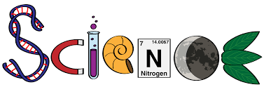

SCIENCE
Science is a systematic discipline that builds and organises knowledge in the form of testable hypotheses and predictions about the world.[1][2] Modern science is typically divided into two or three major branches:[3] the natural sciences (e.g., physics, chemistry, and biology), which study the physical world; and the behavioural sciences (e.g., economics, psychology, and sociology), which study individuals and societies.[4][5] The formal sciences (e.g., logic, mathematics, and theoretical computer science), which study formal systems governed by axioms and rules,[6][7] are sometimes described as being sciences as well; however, they are often regarded as a separate field because they rely on deductive reasoning instead of the scientific method or empirical evidence as their main methodology.[8][9] Applied sciences are disciplines that use scientific knowledge for practical purposes, such as engineering and medicine.[10][11][12]
The history of science spans the majority of the historical record, with the earliest written records of identifiable predecessors to modern science dating to Bronze Age Egypt and Mesopotamia from around 3000 to 1200 BCE. Their contributions to mathematics, astronomy, and medicine entered and shaped the Greek natural philosophy of classical antiquity, whereby formal attempts were made to provide explanations of events in the physical world based on natural causes, while further advancements, including the introduction of the Hindu–Arabic numeral system, were made during the Golden Age of India.[13]: 12 [14][15][16] Scientific research deteriorated in these regions after the fall of the Western Roman Empire during the Early Middle Ages (400 to 1000 CE), but in the Medieval renaissances (Carolingian Renaissance, Ottonian Renaissance and the Renaissance of the 12th century) scholarship flourished again. Some Greek manuscripts lost in Western Europe were preserved and expanded upon in the Middle East during the Islamic Golden Age,[17] along with the later efforts of Byzantine Greek scholars who brought Greek manuscripts from the dying Byzantine Empire to Western Europe at the start of the Renaissance.
The recovery and assimilation of Greek works and Islamic inquiries into Western Europe from the 10th to 13th century revived "natural philosophy",[18][19][20] which was later transformed by the Scientific Revolution that began in the 16th century[21] as new ideas and discoveries departed from previous Greek conceptions and traditions.[22][23] The scientific method soon played a greater role in knowledge creation and it was not until the 19th century that many of the institutional and professional features of science began to take shape,[24][25] along with the changing of "natural philosophy" to "natural science".[26]
